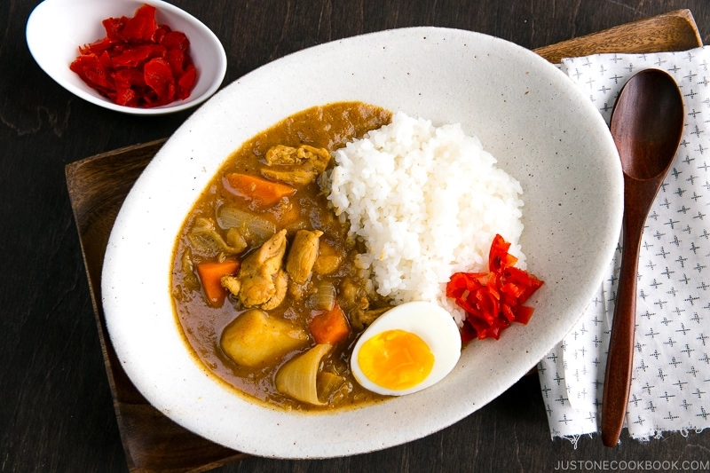

Japanese Curry Recipe

Wholesome curry dish with a Japanese sweet twist.
- Oil
- Chicken
- Garlic
- Ginger
- Carrots
- Potatoes
- Onion
- Curry Mix
- Honey
- Apple
- Soy Sauce
- Ketchup
- Slice chicken andvegetables into small pieces
- Finely dice apple, garlic, and ginger
- Add 2 tbsp oil to hot pan
- Once hot, add garlic, ginger and onion to pan and cook for 1 min
- Now add chicken and cook until outside is no longer pink
- Add potatoes and carrots to pan and toss for a minute or 2
- Pour enough water to cover carrots + potatoes and set to high heat until boil
- Let simmer for 20 mins or until carrots and potatoes soften
- Turn off heat and disolve curry mix one brick at a time
- Put on medium-high heat and add apple, and 1 tbsp honey
- Now add 1 tbsp soy sauce and 1 tbsp ketchup
- Plate and serve with rice